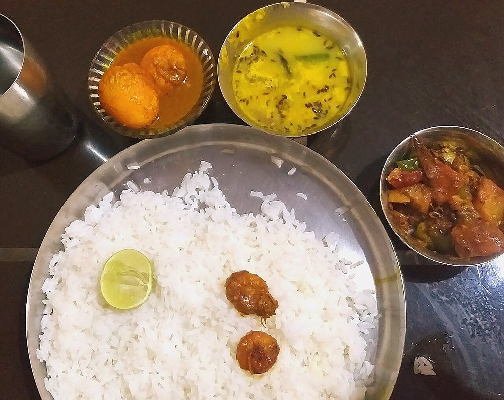

Start the day before. The soaking alone is 4 hr, against 60 min of actual work.
Contains: milk, gluten
Ingredients
Quantities for 4.
- 300g Maida
- 100g Urad Dalsoaked 4 hours, then ground coarse
- 3 tbsp Gheefor the moyan, worked into the flour
- 1.5 tsp Fennel Powder
- 1 tsp, coarsely crushed Fennel Seeds
- 1 tsp, grated Ginger
- 1/2 tsp Asafoetida
- 1/2 tsp Dry Ginger Powder
- 1 tsp Cumin Powder
- 1/2 tsp Chilli Powder
- 2, minced Green Chillioptional
- 1 tsp Sugar
- to taste Salt
- 500ml, for deep frying Neutral Oil
- about 150ml, for the dough Water
Cookware
stovetop, kadhai
Checked against the ingredient list for ten allergens: milk, egg, fish, crustaceans, tree nuts, peanuts, sesame, mustard, soy and gluten. Brands vary, so read the label on anything new to you.
Before you start
- Soak the urad dal 4 hours, then drain well and grind it coarse with the green chillies and almost no water. A wet paste will not dry out in the pan and the bread will tear.
- Rub the ghee into the maida until the flour holds its shape when squeezed, then bring it together with water into a soft dough and rest it 30 minutes under a damp cloth.
- Cook the filling until it is properly dry and crumbly, then cool it completely. Warm filling steams inside the dough and blows holes in the bread.
Method
- Heat 2 tbsp of the frying oil in a pan, add the asafoetida, crushed fennel seeds and grated ginger, and let them fizz for 20 seconds.
- Add the ground dal with the fennel powder, dry ginger, cumin, chilli powder, sugar and salt, and cook on low for 10 to 12 minutes, breaking up lumps, until it is dry and sandy.It is ready when a pinch of it holds together but leaves no smear on your fingers.
- Spread the filling on a plate to cool completely, then divide it into 12 balls.
- Knead the rested dough for a minute and divide it into 12 equal balls.
- Flatten each dough ball into a 7cm disc with a thicker centre, place a ball of filling in the middle and gather the edges over the top, pinching them shut.Thicker in the centre, thinner at the rim: that is what lets you roll it out without the filling breaking through.
- Rest the stuffed balls seam-side down for 10 minutes, then roll each gently into a 10cm disc using oil, not flour, on the board.Dry flour on the surface burns and darkens the frying oil within two batches.
- Heat the remaining oil in a kadhai to 180C. A scrap of dough should rise to the surface in about 3 seconds.
- Slide in one radhaballavi, press it lightly under the oil with a slotted spoon for 5 seconds, and it will balloon.That gentle press is what makes it puff. Without it you get a flat, greasy bread.
- Fry 40 seconds a side, until pale gold rather than brown, and lift onto a rack.Radhaballavi should stay white and soft. Deep brown means the oil is too hot.
- Repeat with the rest, keeping the oil steady between batches, and serve hot with alur dom.
Storage
Best within an hour of frying. The filling keeps 3 days refrigerated and the dough 24 hours; assemble and fry fresh rather than reheating fried bread.
Nutrition Good estimate
Medium protein: 14 g a serving, 9% of the calories
| Per serving174 g | Per 100 g | |
|---|---|---|
| Calories | 618 kcal | 357 kcal |
| Protein | 14.0 g | 8 g |
| Carbohydrate | 76.9 g | 44 g |
| of which sugars | 2.0 g | 1 g |
| Fibre | 7.5 g | 4 g |
| Fat | 28.7 g | 16 g |
| of which saturated | 8.0 g | 5 g |
| of which unsaturated | 19.0 g | 11 g |
Nearest database match used for asafoetida, urad dal. Estimated from raw ingredients using USDA FoodData Central.
More like this: Vegetarian Indian recipes · No onion no garlic recipes · Bengali recipes
Times, yields, allergens and nutrition are guidance. Use your own judgement on doneness and on storing. More in About.